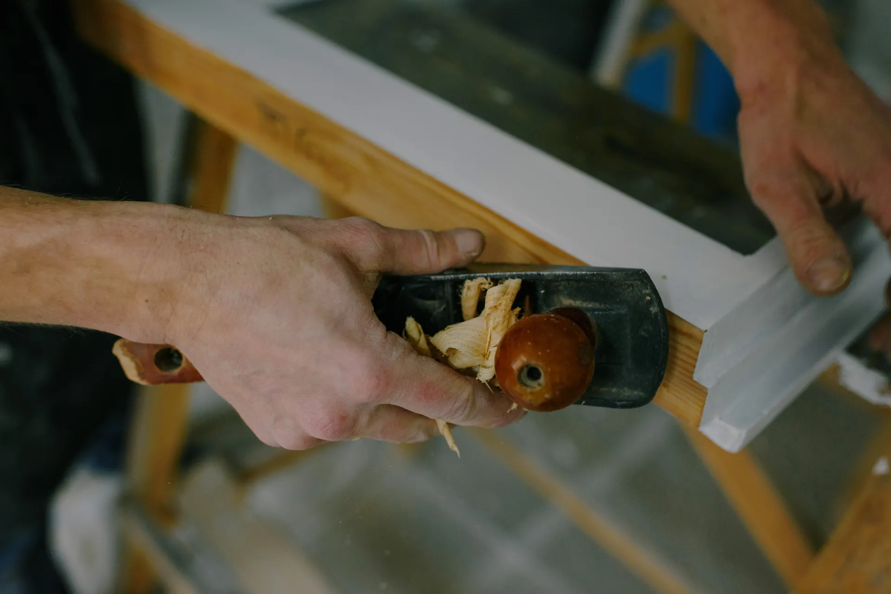
Schreinerei in Musterstadt & Umgebung
Möbel, die passen.
Auf den Millimeter.
Küchen, Einbauschränke, Treppen und Türen – geplant, gefertigt und montiert aus einer Hand. Mit kostenlosem Aufmaß und Festpreis-Angebot in 48 Stunden.
- 4,9★★★★★ · 127 Bewertungen
- 35+Jahre Erfahrung
- 48 hbis zum Festpreis-Angebot
Leistungen
Was wir für Sie bauen
Jedes Stück entsteht in unserer Werkstatt – aus Holz, das wir selbst auswählen, und genau für Ihren Raum.
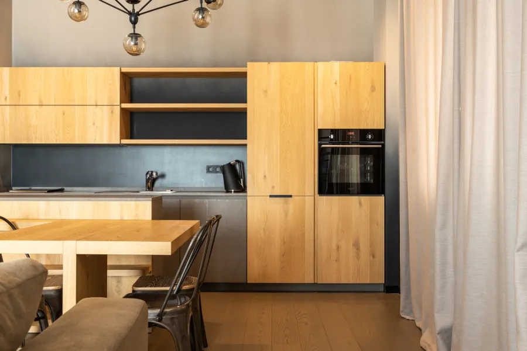
Küchen nach Maß
Massivholz oder Front nach Wahl, mit Geräten Ihrer Marke – Planung im 3D-Modell vorab.
ab 8.900 € · mehr erfahren →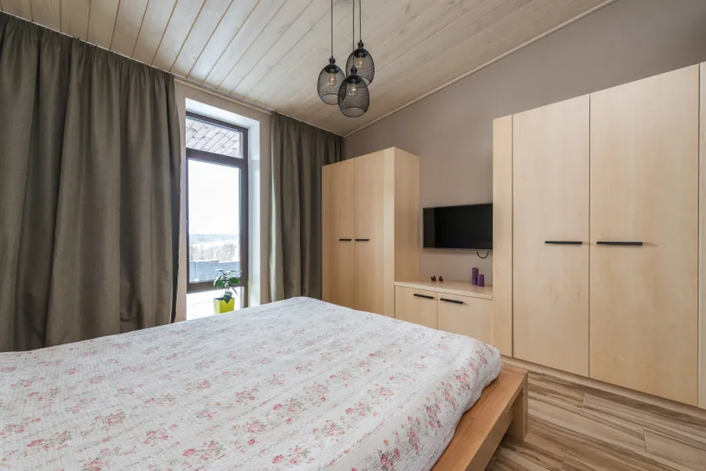
Einbauschränke
Für Dachschrägen, Nischen und Flure – jeder Zentimeter wird Stauraum.
ab 2.400 € · mehr erfahren →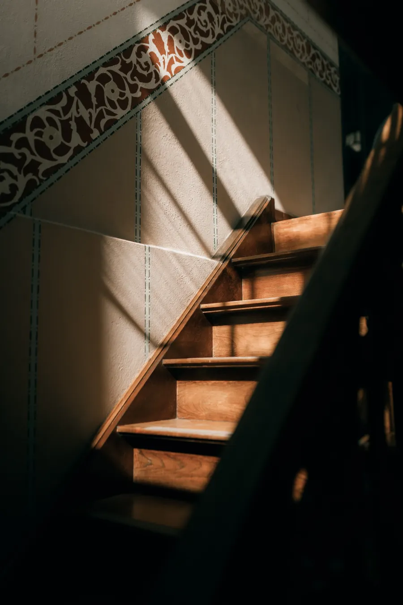
Treppen
Neue Treppen und Renovierung alter Treppen – leise, sicher, schön.
ab 6.500 € · mehr erfahren →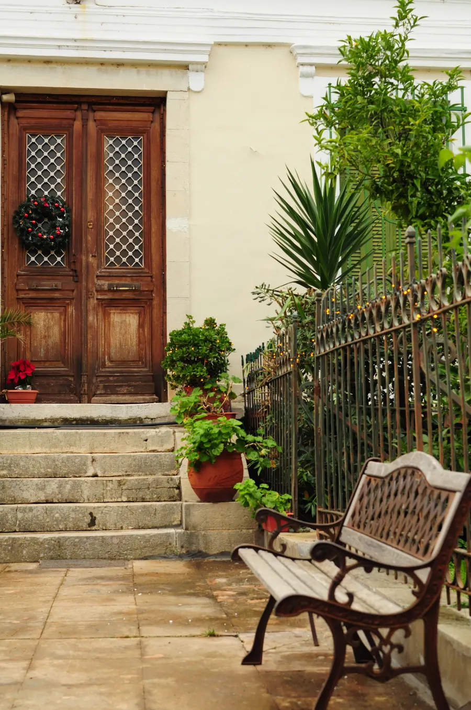
Türen & Fenster
Haustüren, Innentüren und Holzfenster, gedämmt und einbruchhemmend.
auf Anfrage · mehr erfahren →Außerdem: Reparaturen, Möbelrestaurierung, Ladenbau und Badmöbel – fragen Sie einfach.
Referenzen
Aus unserer Werkstatt
Ein paar Projekte aus den letzten Monaten – aus Musterstadt, Nordheim und Lindenau.
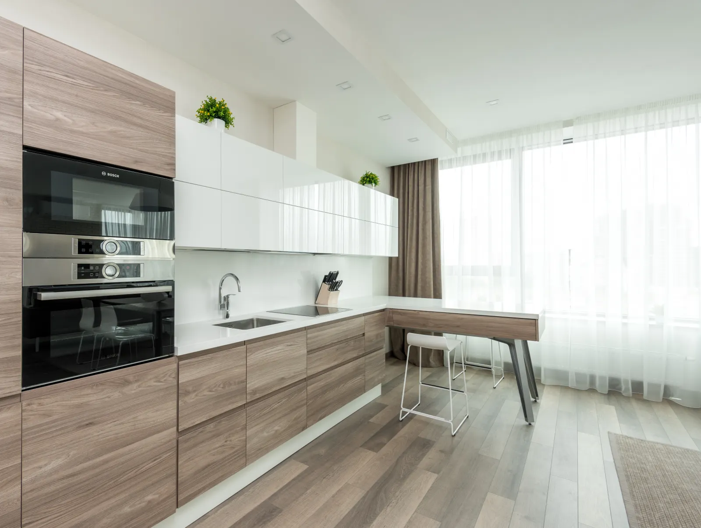
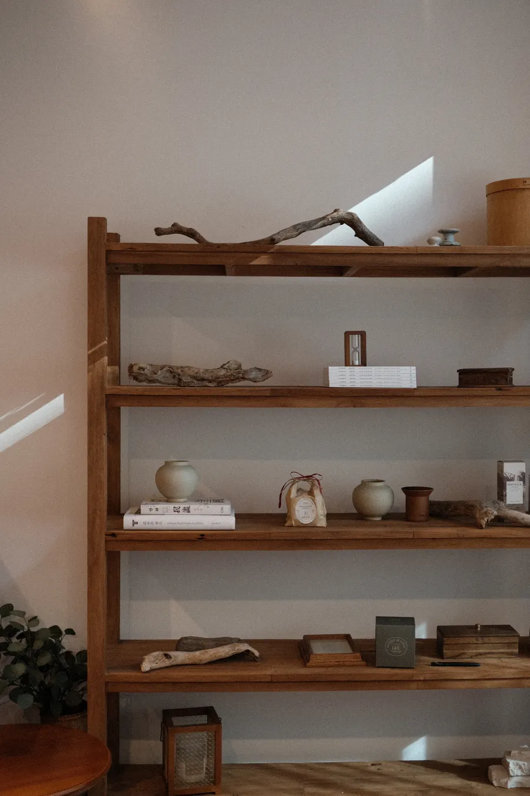
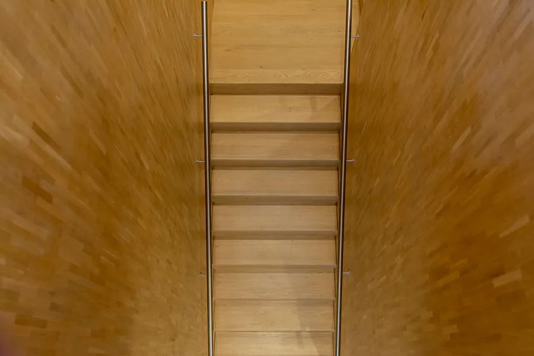
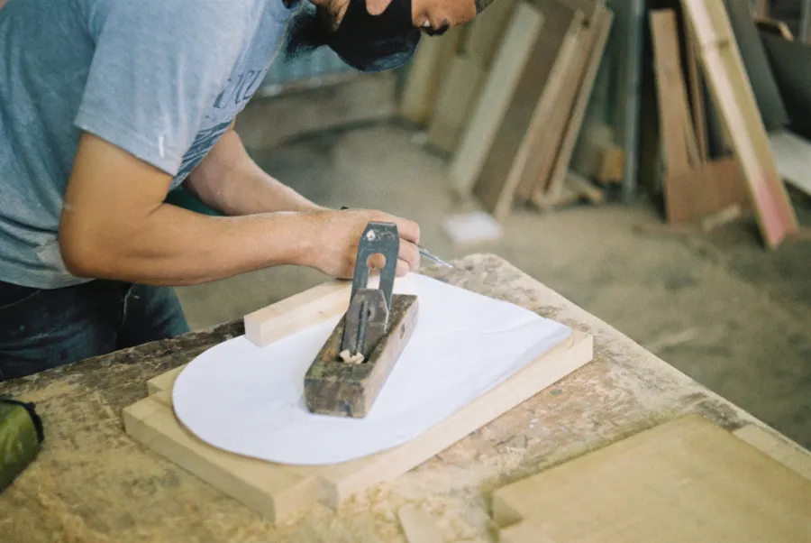
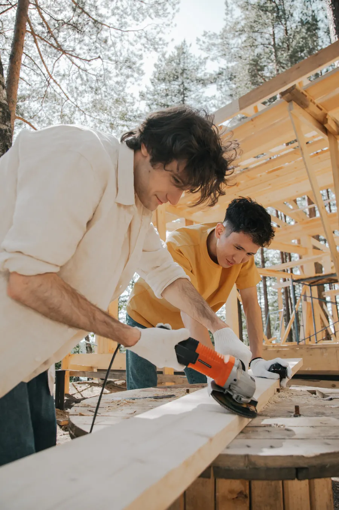
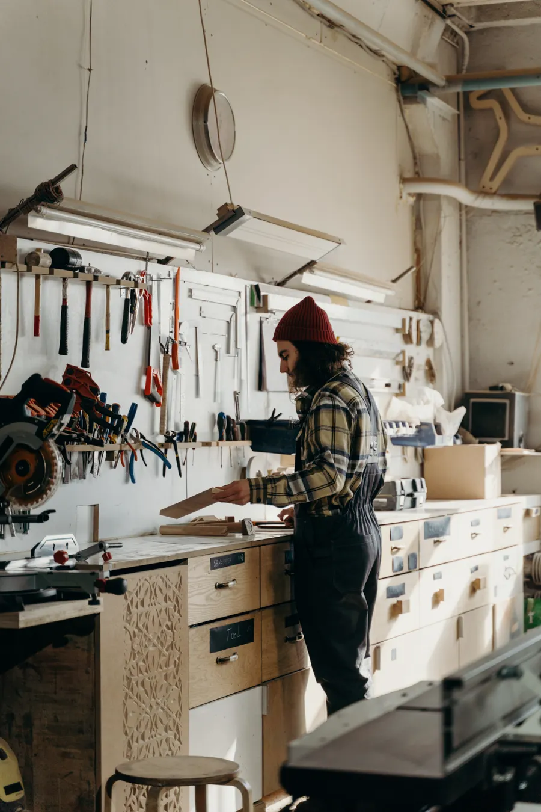
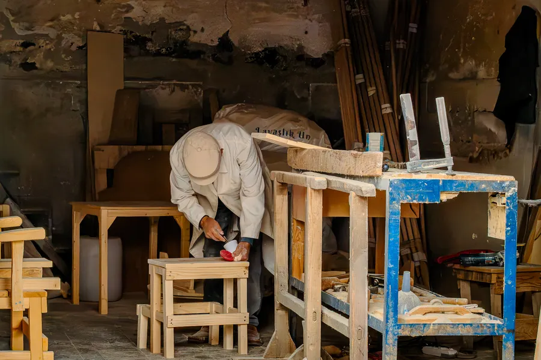
So läuft es ab
In vier Schritten zu Ihrem Möbel
- 1Anruf oder Anfrage
Sie erzählen uns kurz, was Sie sich vorstellen – gern mit Foto.
- 2Kostenloses Aufmaß
Wir kommen vorbei, messen aus und beraten Sie zu Holz und Ausführung.
- 3Festpreis in 48 Stunden
Sie bekommen Zeichnung und Festpreis – ohne versteckte Kosten.
- 4Fertigung & Montage
Wir bauen in unserer Werkstatt und montieren sauber bei Ihnen.
Kundenstimmen
4,9 von 5 Sternen
127 Bewertungen auf Google (Beispiel)
„Die Küche passt perfekt in unseren schiefen Altbau. Pünktlich, sauber, und der Preis war genau wie angeboten.“
„Aufmaß am Montag, Angebot am Mittwoch. So schnell hatte ich das noch bei keinem Handwerker.“
„Unsere alte Treppe sieht aus wie neu und knarrt nicht mehr. Absolute Empfehlung.“
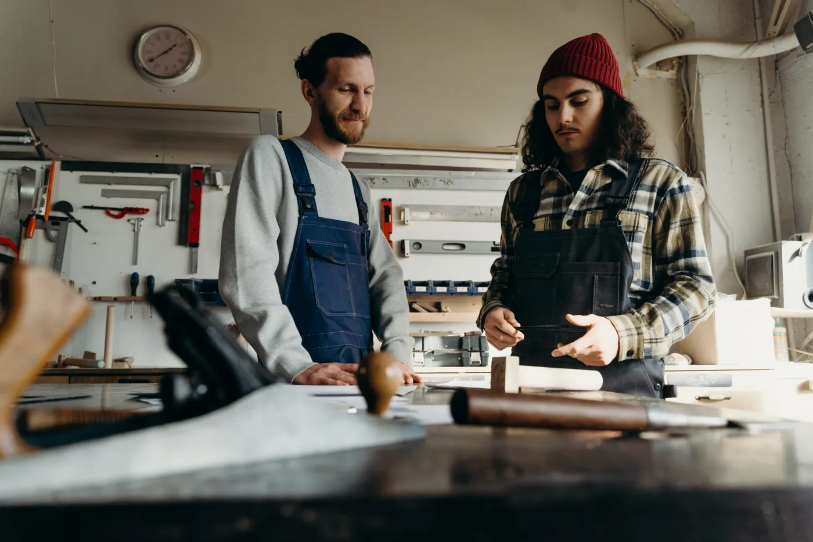
Über uns
Drei Generationen Handwerk
1987 hat Walter Reeder die Werkstatt gegründet, heute führt sein Sohn Jan den Betrieb mit sechs Gesellen und zwei Auszubildenden. Wir arbeiten mit Holz aus nachhaltiger Forstwirtschaft und fertigen alles selbst – vom ersten Schnitt bis zur letzten Schraube.
- Schreinermeister Jan Reeder
- 8 Mitarbeitende, alle aus der Region
- Ausbildungsbetrieb seit 1990
Einsatzgebiet
Ihre Schreinerei für Musterstadt und Umgebung
Wir sind für Sie da in Musterstadt, Nordheim, Lindenau, Bergdorf, Talwiesen und im Umkreis von etwa 30 km. Für größere Projekte kommen wir auch weiter.
Kontakt
Kostenloses Aufmaß anfragen
Sagen Sie uns kurz, worum es geht – wir melden uns innerhalb eines Werktags.
- Telefon01234 567 89-00
- WerkstattWerkstattweg 12, 12345 Musterstadt
- ÖffnungszeitenMo–Fr 7–17 Uhr, Sa nach Vereinbarung
Häufige Fragen
Gut zu wissen
Was kostet eine Küche vom Schreiner?
Eine Küche nach Maß beginnt bei uns bei etwa 8.900 €. Der genaue Preis hängt von Größe, Holz und Geräten ab – nach dem kostenlosen Aufmaß bekommen Sie einen Festpreis.
Wie lange dauert die Fertigung?
Einbauschränke meist 3–4 Wochen, Küchen und Treppen 5–8 Wochen ab Freigabe der Zeichnung.
Kommen Sie auch außerhalb von Musterstadt?
Ja, im Umkreis von etwa 30 km ohne Anfahrtskosten, darüber hinaus nach Absprache.
Ist das Aufmaß wirklich kostenlos?
Ja. Aufmaß, Beratung und Angebot sind kostenlos und unverbindlich.